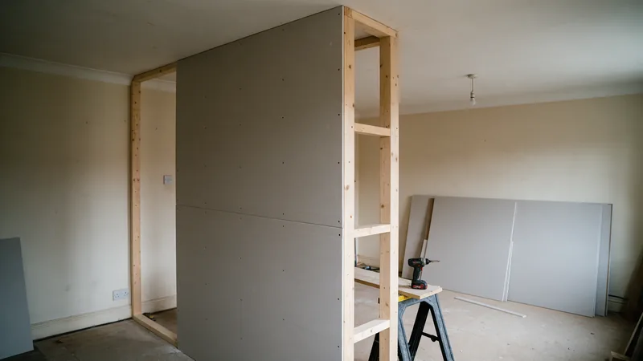
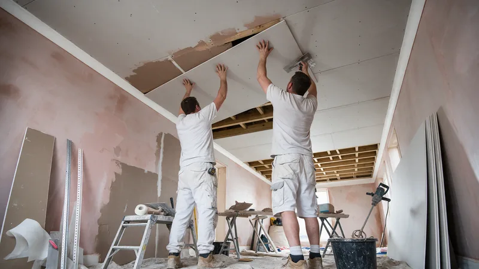

What dry lining actually is
Instead of wet plaster onto masonry, plasterboard is fixed up and then given a thin skim. It can go on a timber or metal stud frame for a new partition, on battens fixed to a wall, or dabbed straight onto masonry with adhesive. It is how nearly all new walls and ceilings are built now, and it is quicker, drier and warmer than the wet alternative.
The thing to understand is where the flatness comes from. On a dry lined wall it comes from the framing or the dabs behind the board, not from the skim. The skim is two or three millimetres and it follows whatever is under it. So the setting out, the plumbing of the studs and the consistency of the dabs are the whole job, and the plastering is the easy half. Anybody who tells you a skim will straighten a badly set out stud wall is wrong.
Insulated board and cold walls
On a solid walled house, dry lining with insulated board is often the practical way to make a cold north facing room usable, because there is no cavity to fill. It is a real improvement and it is worth doing properly. It also wants thinking about, because adding insulation inside changes where the wall gets cold and where moisture can condense. On an old solid wall that matters, and a breathable build up is sometimes the better answer than a plastic faced board. We will raise it rather than just fixing board to a wall and hoping.
Noggins, and deciding before the board goes on
The one thing people wish they had said earlier. Anything heavy going on a stud wall, a television bracket, a radiator, a basin, a wall hung cistern, kitchen units, needs timber behind the board in the right place. That goes in before boarding, and it takes two minutes. Finding out afterwards means either toggle fixings that are never quite right or cutting the board open again. So the question we ask before a single sheet goes up is what is going on this wall, and where.

Generated photoGenerated for this demo. Not a photograph of a real job.

Generated photoScrewed rather than nailed. Nails in a ceiling work loose and pop back through the paint a couple of winters later.
On the job
How this one usually goes.
- Set it out and check itThe line on the floor, the studs plumbed, the frame level and square. A wall is as flat as this stage and no flatter.
- Noggins and services inTimber where anything heavy is going, cables and pipes run and protected, insulation in where it belongs. All of it before the board.
- Board itSheets fixed with the joints staggered, screwed not nailed, cut tight to the corners and kept a few millimetres off the floor so nothing wicks up.
- Tape and beadScrim tape on every joint, beads on external corners and reveals so the arrises come out straight and sharp.
- Two coat skim, then clear upFinish coat in two passes, troweled closed as it goes off. Offcuts and dust away with us.
A sample running order for this demo. Yours depends on the house and what the walls turn out to be doing.
Questions
Asked about this job.
Is dry lining as good as wet plaster?
For most things, yes, and it is warmer and dries faster. Wet plaster onto masonry is still better where you want the solidity, where there is no room to lose, and on an old solid wall that needs to breathe. Each has its place and we will say which one your wall wants.
Can I hang a television on it?
On a stud wall, yes, as long as there is timber behind the board where the bracket goes. That has to be decided before boarding. Tell us where the bracket, the radiator or the basin is going and the noggins go in while the wall is open.
What about sound between rooms?
A single studded wall with one layer of board either side is thin on sound. Insulation in the void, two layers of board, staggered studs or a resilient bar all help, in roughly that order of cost. Worth saying at the start if the wall is between a bedroom and a living room.
Does dot and dab work on a damp wall?
No. Dabbing board onto a wall that is damp traps the moisture behind it and gives you mould you cannot see. The damp gets dealt with first, and on some walls battens and a ventilated gap are a better answer than dabs.
Can you board and skim a ceiling as well?
Yes, and it is the usual way to deal with a ceiling that is past patching. New board screwed into the joists, taped and skimmed, which is flatter and lasts longer than trying to save an old lath ceiling that has gone.
General trade knowledge written for this demo, not advice on your property.
Our work
Sample jobs like this.
 Generated photoBeads plumbed, then plasteredAshton-under-Lyne Sample
Generated photoBeads plumbed, then plasteredAshton-under-Lyne SampleMade up samples with generated pictures. Tap one for the detail.
Also
The other things we do.
Skimming walls and ceilings
A thin finish coat over plaster that is already sound, two passes, flat enough that the light across it shows nothing.
More →Full replastering
Old plaster off back to the brick, the background sorted, an undercoat ruled flat, then the finish. For walls a skim would only follow.
More →Rendering
Sand and cement in two coats, or a modern silicone thin coat that comes coloured through. The wall underneath decides which.
More →Ceiling repairs
A patch where a patch will hold, a new board and skim where the key has gone. After a leak, after artex, or after somebody else's.
More →Coving and cornice
Plain coving run and mitred so you cannot find the joints, or an ornate cornice matched and run back in by hand.
More →Shall somebody come and tap the walls?
Tell us which rooms and your postcode. If a ceiling has come down or water is coming through, use the urgent line instead.